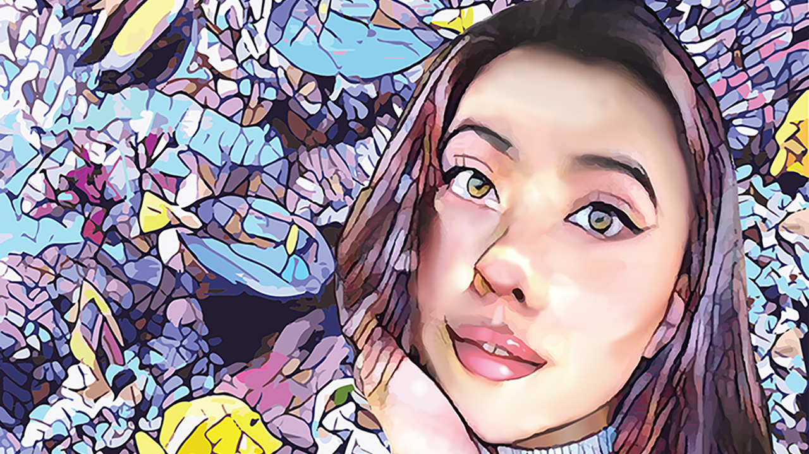
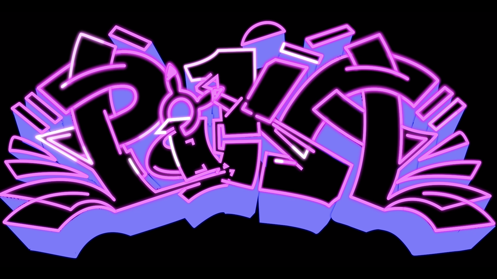

Art Work

Adobe Illustrator">


Adobe After Effects ">
Nicole has a keen desire to humanize technology by combining anthropomorphic items with images
and videos of human beings. With technological components she wants her work to reflect the
relationship we have with technology and how it can beneficially affect us. Yuen’s main
concentrations are using Augmented reality, Virtual reality and Arduino technology to explore
how they can improve our everyday lives.
Yuen's interests transitioned from pictorial to digital during her studies at San Jose State
University. As a Digital Media Arts student, she was able to expand her skills through
interdisciplinaries and discovered her passion for technology. She works with software such
as 3D modeling with Autodesk Maya, Blender, Unity and Cinema 4D. Languages she learned for
creative coding are with Arduino, Html, and Javascript.
Through Yuen’s practice, she tries to humanize technology and examine how humans interact
with them. With digital art becoming the new media she explores the endless possibilities
of how technology can be utilized as a tool to improve our lives.
I <3 digital art
Design
Javascript
Photoshop/ Illustrator
3D Modeling